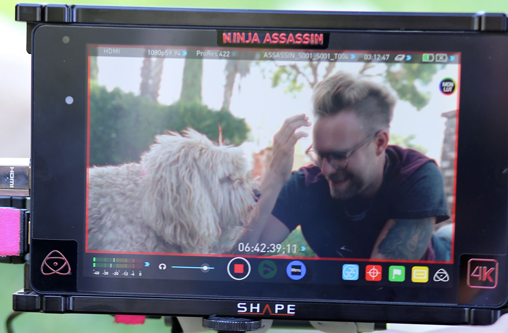
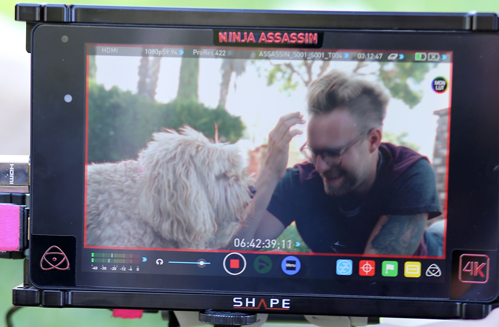

Get Ready For Finding Fido
Z Living’s newest show Finding Fido (premiering this January) is all about matchmaking—only instead of human couples, host Seth Casteel is pairing people with pooches. Tune in each week to watch one lucky dog find their forever home, and one lucky person find their new best friend.
Sign Up For Updates 
